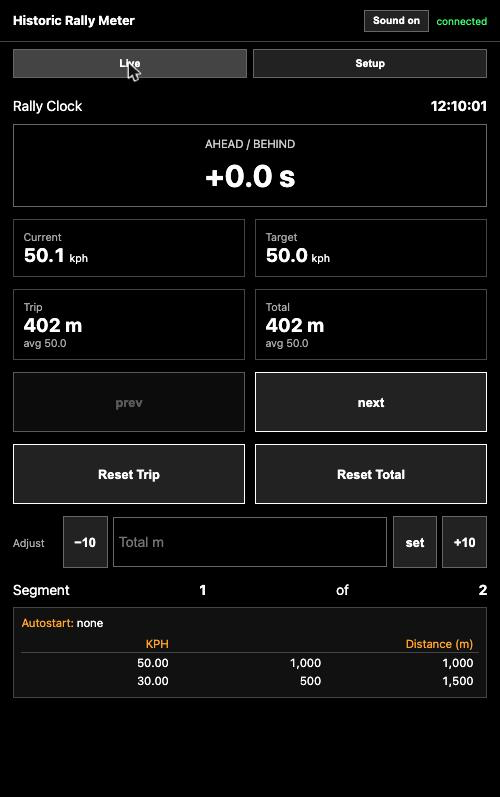
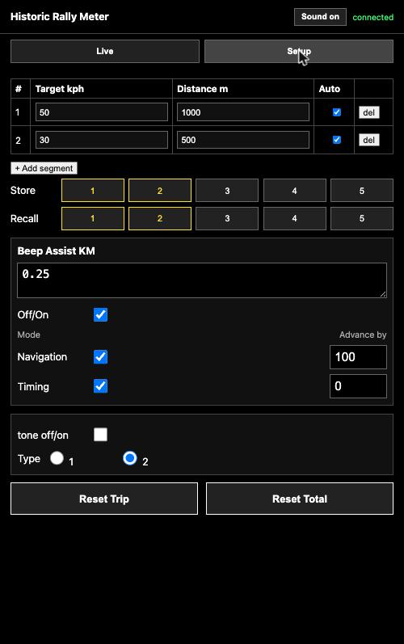

When the rally box is tethered to a mobile phone the phone can be used to control the device. The IP address shown on the date/time page of the device can be typed directly into the phone's browser or entered using the camera and QR code. The phone page will show connected in green when active.
The Live page replicates the functions of the main page on the co-pilot's screen; the Setup page replicates the functions of the segments page.
The error tones can be played via the phone when the sound on button at the top is illuminated.

